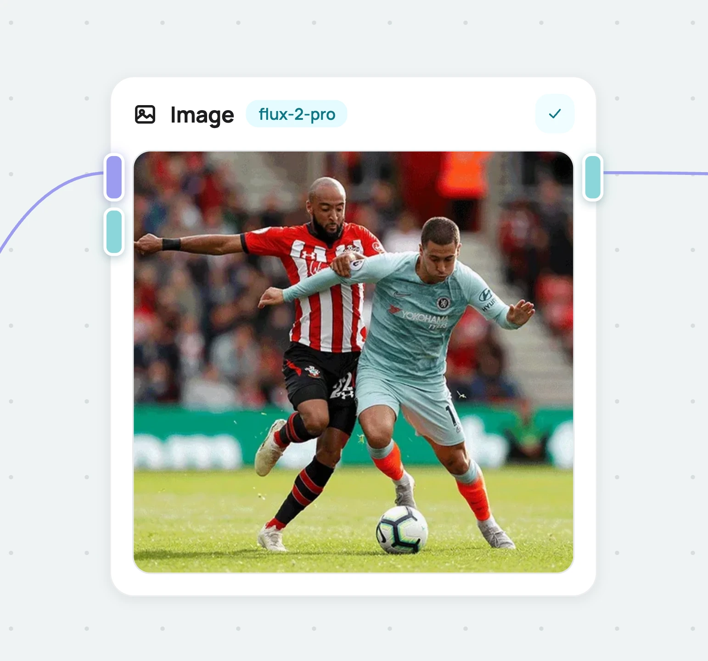

Vicino AI
a canvas built from the ground up
Vicino AI turns a marketing brief into a workflow you can see: an infinite canvas where every node is a generation step, an image, a video, a 3D model.
I helped build Canvas from the ground up, with the design system behind Pulse and the guide that teaches AI to design inside it.
- role
- UX Engineer Intern
- when
- Jun – Aug 2026
- stack
- Figma · React 19 · xyflow
- place
- Bellevue, WA
Canvas
a board where AI tools become nodes
Every tool is a node: image, video, 3D, audio. But the idea was mapped in a sketchbook first, three sheets, one for each use case, drawn before the editor had a single pixel.
four of the seven port types; the wires between them run the redesign’s soft purple


what a node can be, today
Two ways to build
describe it, or wire it
Same board, two hands on it. Tell the agent what you want and watch the graph assemble, or place every node and pull every wire yourself. Most real work is both.
with the agent
a launch post for the new colorway
- 1plan the shot
- 2pick the models
- 3wire & run
by hand
Anatomy of a node
one card, read closely
Every node is the same small promise: inputs on the left, the work in the middle, an output on the right. Learn this card and you’ve read them all.

System
the design language behind Pulse
With my colleagues I helped create the design system behind Pulse, Vicino’s marketing-analytics side: 356 tokens in one truth-source file, and a brand book that ships as a website, because the best handoff is the real thing.
Pulse / Post
four principles
the palette, straight from tokens.css
 (opens the real file in a new tab)
(opens the real file in a new tab)
Decisions, shown
how the language got chosen
Design systems are arguments settled with evidence: four candidate accents on identical dashboards, where cyan won, and one whole screen pushed to the edge of too much cyan.
Accent study
 (opens the real file in a new tab)
(opens the real file in a new tab)
Home experiment
 (opens the real file in a new tab)
(opens the real file in a new tab)
Components
62 components, one truth source
Each one a plain HTML and CSS pair behind the same 356 tokens, with its states, and drift-checked in CI.


The AI guide
a design system machines can read
A design system starts to drift the moment a machine starts drawing. So we wrote it down as a generation contract: a skill an AI agent loads before it touches a screen.
Reuse before inventing, one truth source, and a list of things it must never do.
 (opens the real file in a new tab)
(opens the real file in a new tab)
No painted-on cyan
No fake premium
One layer of glass
One action surface
No border scaffolding
No heavy type
and fail the output if text clips, colours don’t explain state, card shadows form square artifacts, cards nest, or you can’t tell the next action
The guide, at work
eighteen screens, redrawn on-system
Its first big job was Pulse’s onboarding, eighteen screens from landing page to first Daily Report. I handed Claude Code the guide and the system and let the machine do most of the drawing, every screen built live from the real tokens.
11blockers
47friction
32polish
90findings in all, on Pulse’s severity ladder
The review, as a website
see the review (opens in a new tab) (opens the real file in a new tab)
(opens the real file in a new tab)
Results
what shipped
24node types on Canvas, image to audio and every tool between
62components, each an HTML and CSS pair with its states
356tokens in one truth-source file
14charts in one data-display family
18onboarding screens redrawn on-system
- Build the thing first. Canvas taught us what the language needed.
- Then build the language. Tokens linked, never copied, turn drift into a design decision.
- Then teach the machines. A system an AI can read is a system that holds.
- Then hand them the pen. Eighteen screens later, the system held.